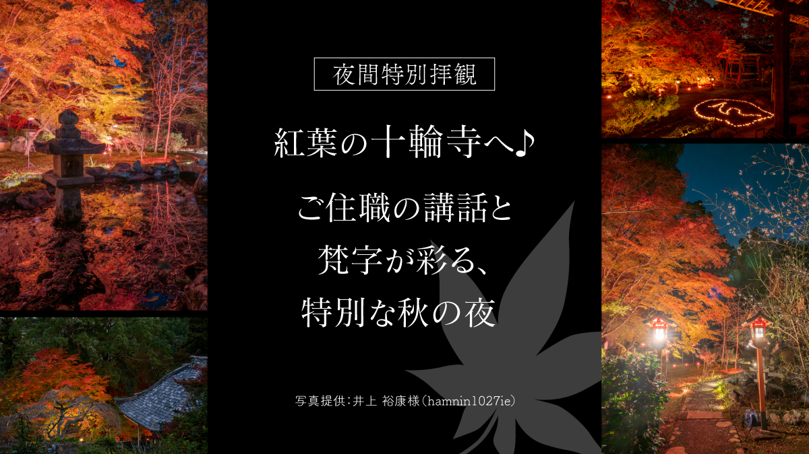
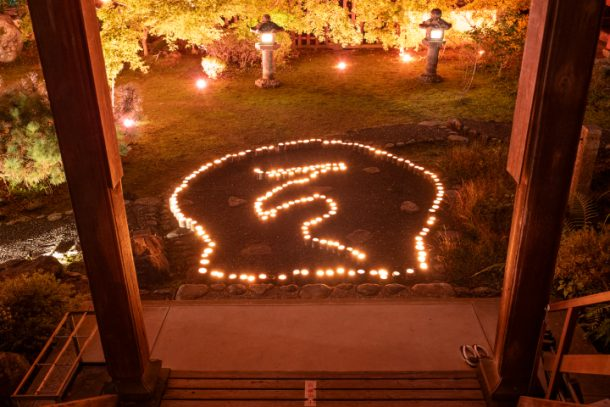
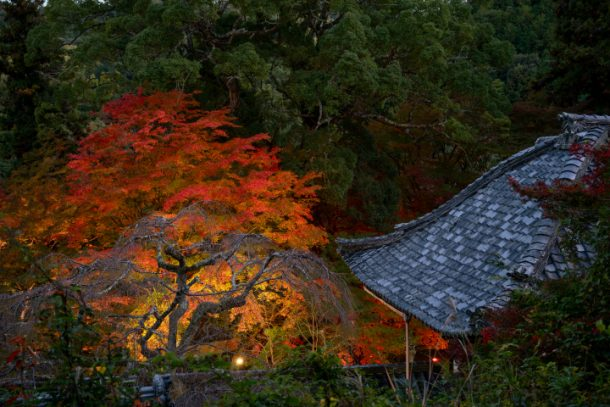
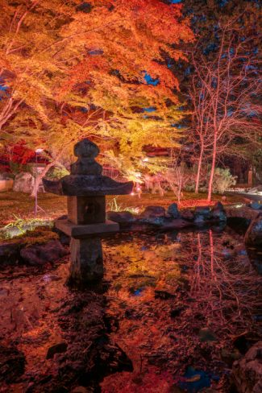
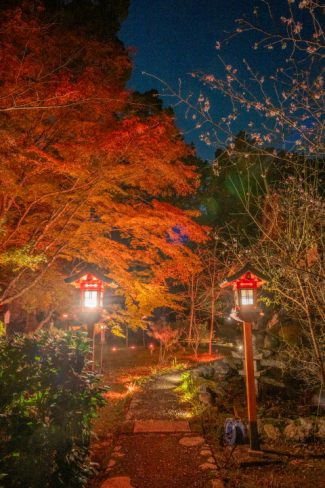

最新の情報は 公式サイトのツアーページ をご覧ください。
【夜間特別拝観】紅葉の十輪寺へ♪ご住職の講話と梵字が彩る、特別な秋の夜

| 送迎付きプラン （京都駅発着） | 7,000円 |
| 現地集合・解散プラン | 3,000円 |
※大人・子ども同額
| 現在のお申込み状況(最少催行人数5名) |
※最新のお申込み状況はお問い合わせください
紅葉の十輪寺で過ごす、特別な秋の夜。
昼間とはまた違う表情を見せる、紅葉の十輪寺へ。
いつもの京都旅とは少し違う時間を過ごしてみませんか？
今回訪れるのは、11月27日(金)・28日(土)の2日間だけの夜間特別拝観。
ご住職による講話に耳を傾けたあとは、特別なライトアップをお楽しみいただきます。
ご住職が一枚一枚したためた「梵字」を庭に並べ、光で照らす、手作りのライトアップ。
紅葉の庭に浮かび上がる梵字の光を眺めながら、心静かに過ごす秋の夜。
たくさんの観光客でにぎわう紅葉名所とはひと味違う、静かな京都の夜を楽しみたい方におすすめです。
京都駅からの送迎付きなので、夜のお出かけも気軽に。
紅葉の名所を巡る旅とはひと味違う、心静かに過ごす秋の夜をお楽しみください。
| ★梵字（ぼんじ）とは？ |
| 梵字（ぼんじ）とは、仏さまや菩薩などを表す文字のこと。 一文字の中に、仏さまの姿や教えが込められているといわれています。 今回は、ご住職が一枚一枚したためた梵字を紅葉の庭に並べ、光で照らす特別なライトアップを予定しています。 |
| おすすめポイント |
| 🌌2日間だけの特別な夜間拝観 通常とは違う夜の十輪寺へ。静かな秋の夜にお楽しみいただけます。 |
| 📖ご住職による講話をお楽しみください ご住職から、十輪寺や今回の特別拝観についてのお話をお聞きいただきます。 昼間の拝観とはひと味違う、特別な時間をお過ごしください。 |
| 🖌ご住職がしたためた「梵字」の手作りライトアップ 今年は、ご住職が一枚一枚したためた梵字を庭に並べ、光で照らします。 仏さまや菩薩などを表す「梵字」が、紅葉の庭に浮かび上がる、この時期だけの特別な演出です。 |
行程
| 時間 | 場所 |
| 17:20 | 京都駅八条口ＭＫタクシーのりば（集合・出発） |
| 18:00 | 十輪寺 <夜間特別拝観／約60分> ※現地集合の方は、18:00までに十輪寺駐車場へお越しください |
| 19:40頃 | 京都駅（解散） |
※渋滞等で予定通りの滞在時間をお取りすることができない場合がございます。予めご了承ください。
※気象状況により紅葉の見ごろは前後する場合があります。
※足元が暗いため、歩きやすい履物でお越しください。
※靴を脱いで本殿へお上がり頂くため、靴下着用にてご参加お願いします。




写真提供：井上 裕康様（Instagram：hamnin1027ie）
【MKトラベルLINE公式アカウント】
MKトラベルの新規ツアー情報をLINEでお届けいたします

【各SNSでも京都の情報やツアー情報をお届けしています】


旅行条件
| ツアー番号 | T295AA／T295BB |
| 出発地 | 京都市 |
| 添乗員／ガイド | なし（乗務員がその業務を代行いたします）／なし |
| 食事 | なし |
| 最少催行人数 | 5名 |
お申込みについてのご注意
※最少催行人数は５名様です。最少催行人員に満たない場合は、旅行の実施を取りやめることがあります。出発の３日前にその旨をご連絡し、お客様から当社がお預かりしている旅行費用の全額をお返しいたします。
※旅行条件・旅行代金は、2026年10月11日現在を基準としています。
※行程および帰着時間は交通事情などにより変更になる場合があります。
※お申込みの前に弊社の募集型企画旅行規約をご確認ください。
よくある質問
Q.1名ですが、申し込みできますか？
A.はい。お一人参加の方もたくさんいらっしゃいますので、お気軽にお申し込みください。
Q. 雨天でも催行しますか？
A.はい。雨が見込まれる日は、安全のため滑りにくい靴でご参加ください。
＜お問合せフォームはこちら▶＞
＜MKトラベルTOPはこちら▶＞
＜おすすめツアー一覧はこちら▶＞
【WEBシステムよりご予約の場合】
・TACPOカード
・コンビニ決済
・クレジットカード決済
お支払方法詳細はこちら
お客様のご都合でご予約をキャンセルされる場合は、すみやかに下記お問合せ先までご連絡ください。
◆コンビニ決済をご選択の場合、支払期限を過ぎますとご予約は自動的にキャンセルとなりますのでご注意ください。
◆お客様のご都合でご予約をキャンセルされた場合、下記キャンセル料を申し受けます。お支払いいただきました旅行代金よりキャンセル料を相殺して、お客様へご返金させていただきます。
【店頭決済／銀行振込／コンビニ決済の場合】
お客様のご指定の口座へご返金させていただきます。
【クレジットカード決済の場合】
ご利用のクレジットカード会社を経由して、ご返金させていただきます。締め日のタイミングによっては一度請求が発生し、その後返金処理となります。キャンセル料
11日目に当たる日以前
無料
10日目に当たる日以前
20%
7日目に当たる日以前
30%
旅行開始日の前日
40%
旅行開始日の当日
50%
旅行開始後又は無連絡
100%